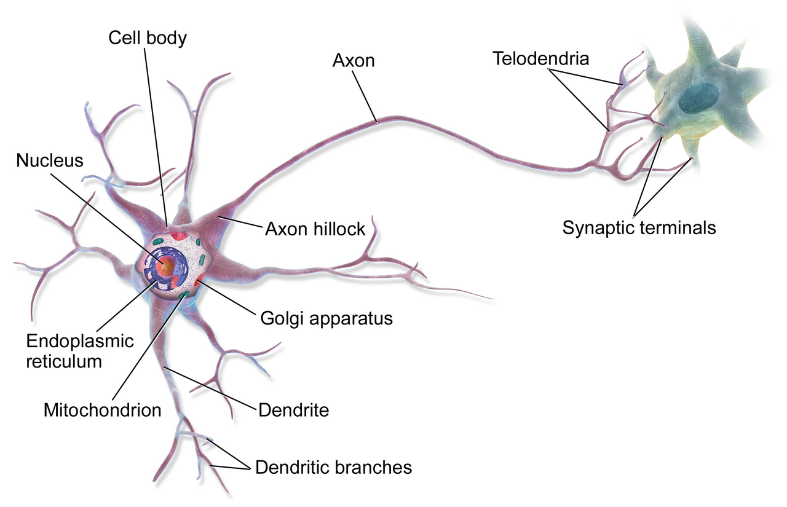
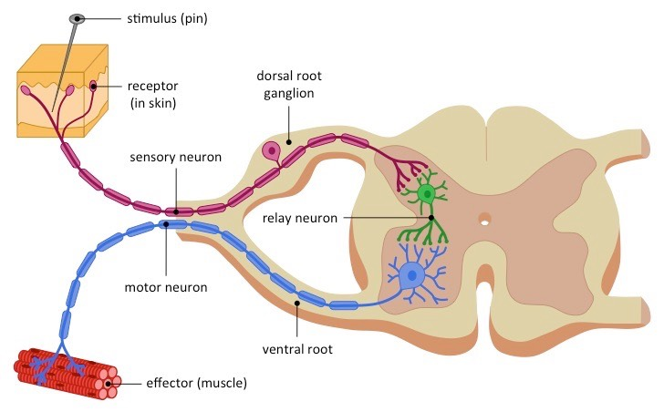
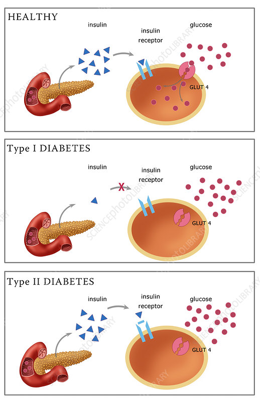

ਹਰ ਜੀਵ — ਭਾਵੇਂ ਸੂਰਜਮੁਖੀ ਸੂਰਜ ਵੱਲ ਮੁੜੇ ਜਾਂ ਮਨੁੱਖ ਗਰਮ ਚੀਜ਼ ਤੋਂ ਹੱਥ ਖਿੱਚੇ — ਆਪਣੇ ਵਾਤਾਵਰਨ ਦੇ ਬਦਲਾਵਾਂ ਨੂੰ ਮਹਿਸੂਸ ਕਰ ਸਕਦਾ ਹੈ। ਇਨ੍ਹਾਂ ਬਦਲਾਵਾਂ ਨੂੰ ਉਦੀਪਨ (stimuli) ਕਹਿੰਦੇ ਹਨ। ਜੀਵਿਤ ਰਹਿਣ ਲਈ ਬਹੁ-ਸੈੱਲੀ ਜੀਵ ਦੇ ਲੱਖਾਂ ਸੈੱਲਾਂ ਨੂੰ ਮਿਲ ਕੇ ਸਹੀ ਪ੍ਰਤੀਕਿਰਿਆ ਦੇਣੀ ਪੈਂਦੀ ਹੈ। ਵੱਖ-ਵੱਖ ਅੰਗਾਂ ਦੇ ਇਸ ਤਾਲਮੇਲ ਨੂੰ ਹੀ ਨਿਯੰਤਰਣ ਅਤੇ ਤਾਲਮੇਲ ਕਹਿੰਦੇ ਹਨ।
Every living thing — whether a sunflower turning to the sun or a human pulling a hand off a hot surface — must sense changes in its surroundings. These changes are called stimuli. To survive, the millions of cells in a multicellular body must work together to produce the correct response. This synchronised working of the organs is what we call control and coordination.
ਨਾੜੀ ਊਤਕ ਬਹੁਤ ਤੇਜ਼ ਪ੍ਰਤੀਕਿਰਿਆ ਦਿੰਦਾ ਹੈ, ਪਰ ਇਸ ਦੀਆਂ ਹੱਦਾਂ ਹਨ। ਪਹਿਲਾ, ਬਿਜਲਈ ਸੰਵੇਗ ਸਿਰਫ਼ ਉਨ੍ਹਾਂ ਸੈੱਲਾਂ ਤੱਕ ਪਹੁੰਚਦਾ ਹੈ ਜੋ ਨਾੜੀ-ਤੰਤੂਆਂ ਨਾਲ ਜੁੜੇ ਹੋਣ। ਦੂਜਾ, ਇੱਕ ਵਾਰ ਸੰਵੇਗ ਭੇਜਣ ਮਗਰੋਂ ਨਿਊਰਾਨ ਨੂੰ ਮੁੜ ਤਿਆਰ ਹੋਣ ਲਈ ਸਮਾਂ ਲੱਗਦਾ ਹੈ। ਸਾਰੇ ਸਰੀਰ ਵਿੱਚ ਹੌਲੀ ਪਰ ਵਿਆਪਕ ਤਾਲਮੇਲ ਲਈ ਅਸੀਂ ਅੰਤਃਸ੍ਰਾਵੀ ਪ੍ਰਣਾਲੀ ਉੱਤੇ ਨਿਰਭਰ ਕਰਦੇ ਹਾਂ, ਜੋ ਹਾਰਮੋਨ ਨਾਂ ਦੇ ਰਸਾਇਣਕ ਸੰਦੇਸ਼ਵਾਹਕ ਸਿੱਧੇ ਲਹੂ ਵਿੱਚ ਛੱਡਦੀ ਹੈ।
Nervous tissue allows very fast responses, but it has limits. First, an electrical impulse only reaches cells joined by nerve fibres. Second, after firing, a neuron needs time to reset. For slow, steady, body-wide coordination — like growth or puberty — we rely on the endocrine system, which sends chemical messengers called hormones straight into the bloodstream to reach every cell.
ਜਾਨਵਰਾਂ ਦੇ ਉਲਟ ਪੌਦਿਆਂ ਕੋਲ ਨਾ ਨਾੜੀ ਪ੍ਰਣਾਲੀ ਹੈ ਨਾ ਮਾਸਪੇਸ਼ੀਆਂ। ਉਹ ਦੌੜ ਕੇ ਭੱਜ ਨਹੀਂ ਸਕਦੇ। ਇਸ ਦੀ ਥਾਂ ਉਹ ਆਪਣਾ ਵਿਹਾਰ ਪਾਦਪ ਹਾਰਮੋਨਾਂ (phytohormones) ਰਾਹੀਂ ਤਾਲਮੇਲਿਤ ਕਰਦੇ ਹਨ। ਜਦੋਂ ਪੌਦਾ ਰੋਸ਼ਨੀ, ਗੁਰੂਤਾ ਜਾਂ ਪਾਣੀ ਮਹਿਸੂਸ ਕਰਦਾ ਹੈ, ਇਹ ਹੌਲੀ ਚੱਲਣ ਵਾਲੇ ਰਸਾਇਣ ਖ਼ਾਸ ਸੈੱਲਾਂ ਦੀ ਵਾਧਾ-ਦਰ ਬਦਲ ਦਿੰਦੇ ਹਨ, ਜਿਸ ਨਾਲ ਤਣਾ ਰੋਸ਼ਨੀ ਵੱਲ ਝੁਕਦਾ ਹੈ ਤੇ ਜੜ੍ਹਾਂ ਡੂੰਘੇ ਪਾਣੀ ਵੱਲ ਵਧਦੀਆਂ ਹਨ।
Unlike animals, plants have no nervous system and no muscles; they cannot run from danger. Instead they coordinate through phytohormones (plant hormones). When a plant senses light, gravity or water, these slow-moving chemicals change the growth rate of particular cells, letting the stem bend toward light and the roots reach for deep water.

Interactive Recall: Tap the blue blocks to reveal the clinical mechanism.
The nervous system is split into two connected divisions that work together.
| Division | Parts Included | Main Job |
|---|---|---|
| Central Nervous System (CNS) ਕੇਂਦਰੀ ਨਾੜੀ ਪ੍ਰਣਾਲੀ | Brain + Spinal Cord | Processes information and takes decisions |
| Peripheral Nervous System (PNS) ਪੈਰੀਫਿਰਲ ਨਾੜੀ ਪ੍ਰਣਾਲੀ | Cranial nerves + Spinal nerves | Carries messages to and from the CNS |
| Neuron | Direction of Impulse | Role |
|---|---|---|
| Sensory Neuron ਸੰਵੇਦੀ | Receptor → CNS | Carries messages from sense organs to the CNS |
| Relay (Inter) Neuron ਰੀਲੇਅ | Inside CNS | Connects sensory and motor neurons |
| Motor Neuron ਪ੍ਰੇਰਕ | CNS → Effector | Carries commands to muscles or glands |
Interactive Recall: Tap the blue blocks to reveal each stage.

Interactive Sequencer: Build the chronological sequence of a reflex action.
Hover over the brain regions to reveal their exact board-tested functions.
| Region | Main Part | Board-Tested Function |
|---|---|---|
| Fore-brain ਅਗਲਾ ਦਿਮਾਗ | Cerebrum | Thinking, memory, voluntary actions, sensing |
| Mid-brain ਵਿਚਕਾਰਲਾ ਦਿਮਾਗ | — | Controls reflexes of the eye (pupil, head movements) |
| Hind-brain ਪਿਛਲਾ ਦਿਮਾਗ | Cerebellum, Medulla, Pons | Balance, posture & involuntary actions (heartbeat, breathing) |
When you touch something hot, waiting for the brain to think would waste precious time and you could get burnt. So the spinal cord takes a shortcut.
Follow the signal from nerve impulse to movement, then test the key idea.
Explore all four phases to unlock the knowledge check.
A nerve impulse alone is only a message. Something must physically act on it: the muscle cell.
Can muscles push a bone to cause movement?

Hormones operate on a precise feedback mechanism to maintain homeostasis.
| Gland | Hormone | Function |
|---|---|---|
| Pituitary ਪਿਟਿਉਟਰੀ | Growth Hormone | Controls body growth & other glands |
| Thyroid ਥਾਇਰਾਇਡ | Thyroxine | Controls metabolism (needs iodine) |
| Pancreas ਪੈਨਕ੍ਰੀਆਸ | Insulin | Controls blood sugar level |
| Adrenal ਐਡਰੀਨਲ | Adrenaline | Prepares body for emergency (fight/flight) |
| Testis ਟੈਸਟਿਸ | Testosterone | Male sexual development |
| Ovary ਓਵਰੀ | Oestrogen | Female sexual development |
The thyroid gland makes the hormone thyroxine, which controls how fast the body uses carbohydrates, proteins and fats (its metabolism).
When you are scared or angry, the adrenal glands release adrenaline straight into the blood to prepare you for quick action.
| Body Change | Why It Helps |
|---|---|
| Faster heartbeat & breathing | More oxygen reaches the muscles |
| Blood diverted to muscles | Muscles get more energy to react |
| Higher blood sugar | Provides instant fuel for the body |
Interactive Match: Tap a plant hormone, then tap its correct clinical function.
Hover over each card to compare the two kinds of plant movement.
Interactive Match: Tap a tropism, then tap the stimulus it responds to.
Interactive Match: Tap a gland, then tap the hormone it secretes.
Click a feature, then click the system it belongs to. (ਵਿਸ਼ੇਸ਼ਤਾ ਚੁਣੋ, ਫਿਰ ਸਹੀ ਪ੍ਰਣਾਲੀ 'ਤੇ ਕਲਿੱਕ ਕਰੋ।)
Interactive Recall: Tap the blue blocks to complete the revision.
Every "Say It Back" question in this deck has been formatted for Anki, with both English and Punjabi answers. (ਇਸ ਡੈੱਕ ਵਿੱਚ ਹਰ "Say It Back" ਸਵਾਲ ਅੰਕੀ ਲਈ ਤਿਆਰ ਹੈ।)